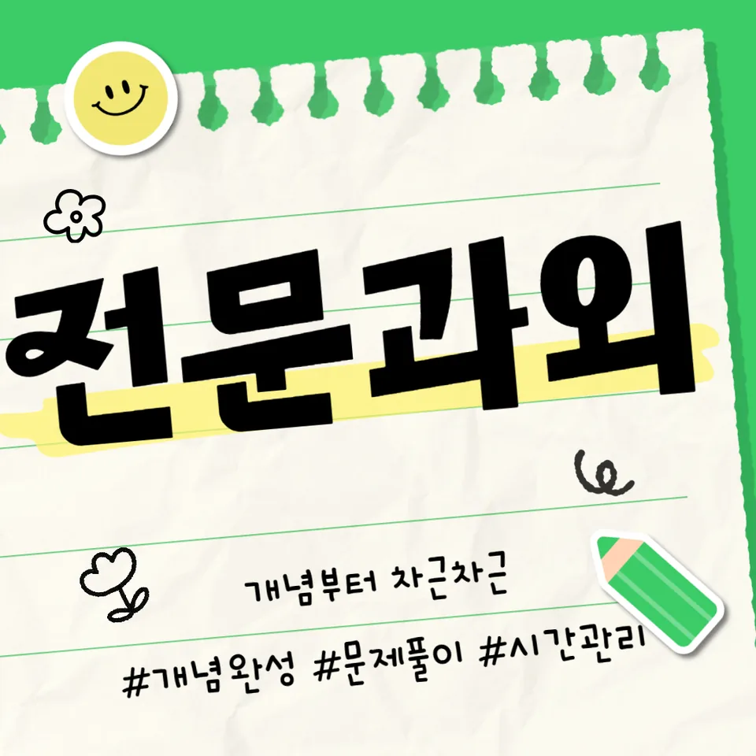

PageType : SUBJECT
URL : /경기도과외/성남시과외/분당구과외/야탑동과외/야탑동수학과외/
지역 교육환경이 수학 학습에 미치는 영향
야탑동수학과외를 찾는 학생들은 대체로 주변 학습 분위기 속에서 속도를 맞추려는 경향이 있습니다. 학교가 끝난 뒤 학습을 이어가는 방식이 자연스럽게 자리 잡혀 있어, 수학이 뒤처지는 느낌이 들면 빠르게 보완하려는 마음이 커집니다. 다만 학습 리듬이 빨라질수록 “어제의 개념”과 “오늘의 문제”가 분리되지 못하고, 결과적으로 이해보다 속도에 기대는 흐름이 생기기 쉽습니다.
또한 학교 수업에서 핵심 흐름을 따라가지 못한 상태로 야탑동수학과외 수업을 시작하면, 학생은 문제를 풀면서도 ‘왜 이런 관점이 필요한지’를 계속 놓치게 됩니다. 지역 학습 문화가 촘촘할수록 오답을 줄이기 위한 연습은 빨라질 수 있지만, 오답의 근본 원인을 분석하는 과정이 얇아지면 복습이 형식이 될 수 있습니다. 그래서 야탑동수학과외에서는 공부습관을 수학 학습의 일부로 연결해, 개념 이해와 내신 준비가 같은 방향을 보게 만드는 데 집중하게 됩니다.
학부모가 체감하는 변화도 자주 드러납니다. 수학 성적을 끌어올리려는 마음이 강해질수록 시험 직전 일정이 촘촘해지고, 학습 시간은 늘었는데 사고력은 더디게 자라나는 상황이 생기기도 합니다. 야탑동수학과외는 이런 간극을 줄이기 위해, 시험 전의 압박과 일상 학습의 기준을 분리해 관리하도록 돕습니다.
학교별 평가 방식과 학습 방향
학교마다 내신과 수행평가의 비중, 그리고 문제 유형의 체감 난도가 다르게 나타납니다. 어떤 학교는 계산 과정과 서술형이 함께 요구되어 학생이 수학을 ‘답만 맞히는 과목’으로 오해하기 쉽고, 다른 학교는 단원별 이해도를 바탕으로 사고 과정을 정리하는 형태가 강조될 수 있습니다. 이 차이는 야탑동수학과외에서 학습 방향을 조정하게 만드는 핵심 이유가 됩니다.
평가 방식이 바뀌면 공부의 우선순위도 함께 흔들립니다. 수행평가가 자주 있는 경우 학생은 수업에서 메모를 남기고 정리하는 비중이 늘지만, 시험이 가까워질 때 그 정리가 문제풀이 시간으로 흡수되며 다시 흐트러질 수 있습니다. 반대로 내신 중심으로 설계된 학교에서는 반복과 복습의 역할이 더 두드러지는데, 학생은 “또 풀면 되겠지”라고 생각하면서 오답을 같은 방식으로 반복하게 됩니다.
그래서 야탑동수학과외에서는 학교에서 요구하는 평가 기준을 기준점으로 삼아 학습 습관의 형태를 다르게 잡습니다. 수학 학습이 단순히 공부량이 아니라, 내신에서 점수를 만드는 방식과 연결되어야 학생이 불안을 덜고 자기주도학습으로 넘어갈 수 있습니다.
학생들이 수학을 어려워하는 주요 원인
학생이 수학에 어려움을 느끼는 시기는 대체로 개념이 누적되는 구간에서 나타납니다. 처음엔 문제를 틀려도 “다음엔 맞추면 된다”는 태도가 남아 있지만, 학년이 올라갈수록 문제의 요구가 복합화되어 실수의 종류가 다양해집니다. 야탑동수학과외를 통해 상담할 때도 학생은 “계산은 되는데 적용이 안 된다” “문제만 보면 막힌다”처럼 이해와 활용의 경로가 막혔다고 표현하는 경우가 많습니다.
원인은 대체로 세 갈래로 정리됩니다. 첫째, 개념을 이해하는 방식이 ‘암기 중심’으로 굳어져 수학이 상황에 맞게 쓰이는 경험이 부족해집니다. 둘째, 오답이 생겼을 때 왜 틀렸는지의 언어화가 되지 않아 같은 실수가 다음 시험까지 이어집니다. 셋째, 복습 타이밍이 늦어져 수업 때 흐름을 잡았던 기억이 사라진 뒤에야 다시 개념을 보게 됩니다. 이때 학생은 수학을 어렵게 느끼는 감정을 공부 습관 전체로 확장해, 스스로를 “원래 못한다”는 쪽으로 밀어버리기도 합니다.
야탑동수학과외에서 특히 다루는 지점은 학생이 스스로 오답을 바라보는 시선의 회복입니다. 틀린 문제를 분석할 때 ‘정답만 찾는 과정’이 아니라 ‘사고의 방향을 확인하는 과정’으로 바뀌면, 수학 학습은 부담에서 성장으로 이동합니다.
학년 변화에 따른 수학 학습의 차이
학년이 올라갈수록 수학의 부담은 단순히 어려워지는 정도로만 설명되지 않습니다. 앞선 단원이 다음 단원의 배경이 되며, 학생은 문제를 풀면서도 여러 개념을 동시에 호출해야 합니다. 그래서 초기에 수학을 따라가는 방식이 정리되지 않으면, 중간 단계에서 갑자기 학습이 무너지는 체감이 커집니다.
중학교 이후로 넘어가면 내신과 시험의 구성도 달라져 시간 관리의 부담이 함께 커집니다. 어떤 학생은 이해가 느려서 시간이 부족해지고, 어떤 학생은 계산이 빨라도 개념을 연결하는 속도가 느려집니다. 야탑동수학과외는 학습 부담의 성격을 구분해, 같은 ‘공부 시간’이라도 무엇을 하는지가 달라지도록 도와줍니다. 예를 들어 시험 기간에는 계획적인 학습이 흔들릴 수 있는데, 이때 자기주도학습이 자리 잡지 못하면 학습 패턴이 매일 바뀌어 누적 효과가 떨어집니다.
학년 변화는 학부모의 걱정도 바꿉니다. 초반에는 “이해가 되나요”를 묻다가, 이후에는 “복습이 제대로 되나요” “오답이 반복되나요”로 질문이 이동하는 편입니다. 야탑동수학과외는 이 변화 흐름을 따라가며, 학생이 시험 기간에 잠깐 집중하는 방식이 아니라 학습 계획을 꾸준히 유지하도록 생활 리듬까지 연결합니다.
꾸준한 학습이 실력으로 이어지는 과정
수학 실력은 단기간에 완성되는 결과물이 아니라, 매주 확인되는 작은 변화가 쌓여 형성됩니다. 야탑동수학과외에서 가장 자주 관찰되는 변화는 ‘이해가 남아있는 시간’이 늘어나는 순간입니다. 처음에는 수업에서 본 개념도 숙제 시간이 지나면 흐릿해지지만, 복습의 주기가 맞춰지면 학생은 스스로 용어를 떠올리고 사고를 이어갈 수 있게 됩니다.
이 과정에서 공부습관의 역할이 분명해집니다. 계획적인 학습 습관이 있으면 시험 직전에도 정보가 새로 쌓이는 느낌이 아니라, 기존의 흐름을 점검하는 느낌으로 전환됩니다. 반대로 습관이 무너지면 시험 기간 학습 패턴이 감정과 일정에 좌우되어, 복습이 줄고 오답이 누적됩니다. 결국 학생은 문제 해결에서 낙오를 반복하고, 사고력 성장 속도가 느려진다고 느끼게 됩니다.
야탑동수학과외는 학교와 가정에서 이어지는 학습 환경을 연결하는 방식으로 접근합니다. 수업 후 즉시 정리할지, 주말에 집중할지 같은 형태는 달라도 핵심은 ‘복습이 학습 성과로 이어지는 고리’를 끊지 않는 것입니다. 자기주도학습이 자리 잡을 때 학생은 스스로 무엇을 더 공부해야 하는지 우선순위를 세우고, 그 선택이 점차 정확해집니다.
문제 해결력을 키우는 학습 습관
문제 해결력은 “많이 풀기”보다 “풀면서 사고를 점검하기”로 자라납니다. 야탑동수학과외에서 학생들이 성장한다고 느끼는 순간은, 답을 고르는 과정에서 근거가 함께 따라오는 경험을 할 때입니다. 문제를 접했을 때 어떤 관점이 필요했는지, 그 관점이 왜 맞는지 언어로 설명할 수 있으면 수학은 더 이상 낯선 문제들의 집합이 아니라 일관된 사고 훈련이 됩니다.
여기서 중요한 건 오답을 학습의 재료로 바꾸는 방식입니다. 학생이 틀린 문제를 “다음에 또 봐야지”로 넘기면 복습이 시간 소비로 남지만, 왜 틀렸는지의 원인이 구체화되면 반복 횟수는 줄고 학습 효율은 올라갑니다. 그래서 야탑동수학과외는 오답 분석을 단순한 기록이 아니라 사고력 점검으로 연결합니다.
시간을 효율적으로 활용하는 방법도 습관으로 나타납니다. 학생이 시험 범위에 맞춰 계획을 세울 때, 시간은 줄어들지 않아도 불안이 줄어듭니다. 불안이 줄면 계산이나 이해 과정이 흔들리지 않고, 문제 해결 과정에서 실수가 줄어드는 흐름이 생깁니다. 결국 문제 해결은 실력의 일부로 굳어지고, 사고력도 꾸준히 성장합니다.
복습과 학습 관리가 중요한 이유
복습은 단순한 재확인이 아니라 기억과 개념을 연결하는 작업입니다. 야탑동수학과외에서 학생들의 공부 습관을 점검하다 보면, 복습이 존재하지만 “언제 무엇을 얼마나” 보는지 기준이 흐린 경우가 많습니다. 그러면 학생은 같은 유형을 반복해도 원인이 남아 있어 점수가 기대만큼 변하지 않습니다.
복습이 성과로 이어지려면 타이밍과 방식이 동시에 맞아야 합니다. 수업 직후에는 개념의 흐름을 붙잡고, 며칠 뒤에는 오답이 아닌 상태에서 스스로 확인하는 식으로 관리가 이어질 때 이해가 오래 갑니다. 이 관리가 안정되면 시험 기간에도 학습 계획이 바뀌지 않고, 학생은 자기주도학습을 통해 스스로 점검할 수 있습니다.
학부모가 가장 자주 겪는 고민도 여기서 나타납니다. “공부는 하는데 왜 불안해하죠?” “오답이 늘어요” 같은 질문은 결국 복습이 학습 과정에서 어떤 역할을 하는지에 대한 기준이 부족할 때 생깁니다. 야탑동수학과외는 복습을 ‘감’이 아니라 ‘학습 관리의 절차’로 바꾸어, 오답을 줄이기 위한 반복이 쌓이지 않게 만듭니다.
수학 학습에서 확인해야 할 핵심 요소
수학 학습의 핵심 요소는 성적표 한 장이 아니라, 학생의 학습 과정에서 확인되는 신호로 드러납니다. 먼저 학교 수업과 시험 범위의 연결이 되는지 점검해야 하고, 개념이 암기로 끝나지 않고 문제 해결 과정에 활용되는지 확인해야 합니다. 또 오답이 생겼을 때 분석이 반복을 줄이는 방향으로 이어지는지 살피면, 학생마다 다른 성장 속도와 학습 과정도 자연스럽게 정리됩니다.
다음으로 복습과 사고력의 관계를 함께 봐야 합니다. 학생이 복습을 했는데도 같은 실수가 다시 나오면, 단순히 시간을 더 늘리는 것으로는 해결이 어렵습니다. 복습이 사고력 점검으로 연결되어야 실수가 줄고, 자기주도학습이 자리 잡습니다. 야탑동수학과외는 이런 요소들을 연결해, 공부가 공부로 끝나지 않고 내신과 수행평가 준비로 이어지는 구조를 만들도록 돕습니다.
- 학교 수업과 시험 범위에 맞는 학습 계획을 세우고 있는지 확인합니다.
- 개념을 암기하는 데 그치지 않고 문제 해결 과정에 활용하고 있는지 점검합니다.
- 틀린 문제를 다시 풀어보며 실수의 원인을 꾸준히 분석합니다.
- 단기 성과보다 지속적인 복습과 학습 습관을 유지하고 있는지 살펴봅니다.
자주 묻는 질문
야탑동수학과외는 언제부터 시작하는 것이 좋을까요?
수학에서 어려움이 시작되는 시점은 대개 개념 누적이 느껴질 때입니다. 학교 수업이 쌓이는데도 이해가 남지 않는 느낌이 생겼다면, 시험 전 “급한 보충”보다 학습 흐름을 정리하는 방식이 먼저 필요합니다.
학교 내신과 수행평가는 어떻게 함께 준비하면 좋을까요?
내신에서 요구하는 평가 방식이 무엇인지 확인한 뒤, 수업 정리와 수행평가 준비가 같은 기준으로 돌아가게 관리하는 것이 중요합니다. 야탑동수학과외에서는 학생이 시험 기간에 학습 패턴이 흔들리지 않도록 계획적인 루틴을 먼저 세웁니다.
수학 개념이 약한 학생도 따라갈 수 있을까요?
가능합니다. 핵심은 빠르게 진도를 따라가는 것이 아니라, 개념을 이해하고 활용하는 순간을 작은 단위로 확인하는 것입니다. 복습이 제때 이루어질 때 학생은 수학을 ‘어렵지만 배우는 과정’으로 다시 인식합니다.
오답을 줄이려면 어떤 과정이 필요할까요?
오답을 단순 기록으로 끝내지 않고, 사고의 흐름에서 어디가 끊겼는지 언어로 점검해야 합니다. 야탑동수학과외에서는 오답 분석이 반복을 줄이는 방향으로 이어지도록 학습 관리 기준을 잡습니다.
시험 기간에는 공부 습관을 어떻게 유지하는 게 좋을까요?
시험 기간에도 복습과 계획이 이어져야 합니다. 시간만 늘리면 흔들릴 수 있으니, 학교 범위에 맞춘 점검 항목을 정해 놓고 자기주도학습이 돌아가게 만드는 방식이 효과적입니다. 야탑동수학과외는 이렇게 계획적인 학습 습관을 고정하는 쪽에 초점을 둡니다.
